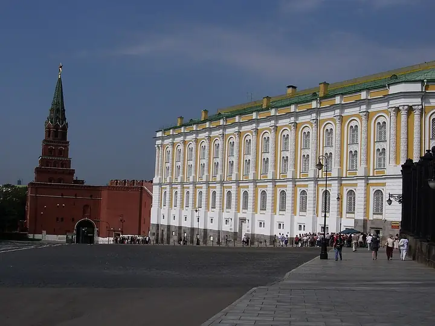

Фото: Jean & Nathalie, CC BY 2.0 · Wikimedia Commons
Музей · ЦАО
Оружейная палата
Сокровищница Кремля: короны, кареты, оружие и яйца Фаберже. Билеты на сеансы.
- ₽₽₽ · дороже 3 000 ₽ на человека
Позвать сюда: Оружейная палатаОткрыть в каталоге: Оружейная палатаМаршрут до места: Оружейная палата
Адрес и детали
- Адрес
- Кремль, Оружейная палата
Открыть на Яндекс Картах (в новой вкладке) - Метро
- м. Боровицкая
- Округ
- Центр (ЦАО)
- Цена
- дороже 3 000 ₽ на человека
- Часы работы
- пн, вт, ср, пт, сб, вс 10:00–18:00 · проверили в октябре 2026
- Телефон
- +7 (495) 697-03-49
- Проверено
- работает — проверили в октябре 2026
Похожие рядом

Что ещё рядом


Как позвать
- Выбери план, место или событие — в карточке адрес, цены и маршрут в Яндекс Картах.
- Нажми «Позвать сюда» — соберётся приглашение-игра для свидания или голосование для компании.
- Отправь ссылку в любой мессенджер: тебе ответят, а компания отметит, куда и когда может. Бесплатно и без регистрации.